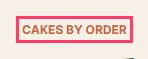
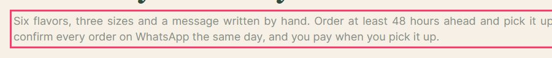
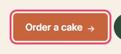
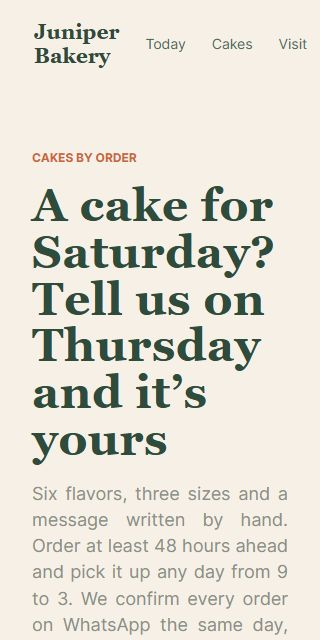
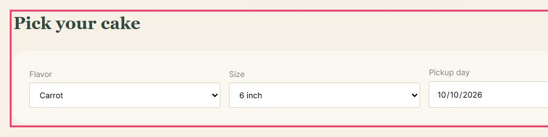
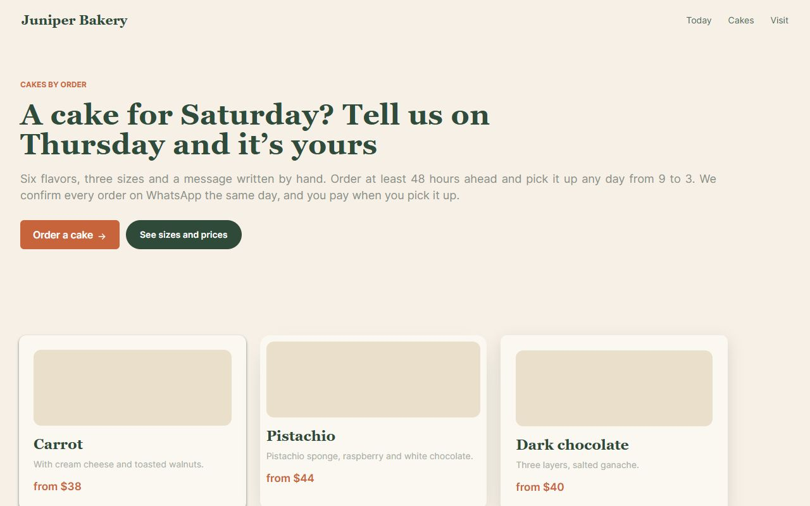

rough 1 page
2block people
3to fix
1worth a look
23rules passed
Fix first grouped by rule, most serious on top
- Elements must meet minimum color contrast ratio thresholdsBlocks people
Ensure the contrast between foreground and background colors meets WCAG 2 AA minimum contrast ratio thresholds
1.4.3 Contrast (Minimum) AAeMAG 4.117 elements on /
span 
.lead 
a[href$="#pick"] How to fixElement has insufficient color contrast of 3.39 (foreground color: #c9663c, background color: #f6f0e6, font size: 9.0pt (12px), font weight: bold). Expected contrast ratio of 4.5:1 Details - Content does not reflow at 320pxBlocks people
At 320 CSS pixels wide (400% zoom on a laptop) the page scrolls sideways.
1.4.10 Reflow AAeMAG 4.31 element on /
article.card · +230px How to fixLet the element wrap or shrink: max-width: 100%, flexible grids, overflow-x: auto on tables and code. - All page content should be contained by landmarksTo fix
Ensure all page content is contained by landmarks
eMAG 1.8best practice5 elements on /
.hero 
.cards 
#pick How to fixSome page content is not contained by landmarks Details - Heading levels should only increase by oneTo fix
Ensure the order of headings is semantically correct
eMAG 1.3best practice1 element on /
article:nth-child(1) > h3 How to fixHeading order invalid Details - Document should have one main landmarkTo fix
Ensure the document has a main landmark
eMAG 1.8best practice1 element on /
html How to fixDocument does not have a main landmark Details - No skip linkWorth a look
The first Tab stop is not a link to the main content, so keyboard users go through the whole menu on every page.
2.4.1 Bypass Blocks AeMAG 1.51 element on /a # “Juniper Bakery”How to fixAdd “Skip to content” as the first focusable element, pointing to <main id="content">. eMAG 1.5 asks for it.
Keyboard
| Tab stops | Skip link | No visible focus | Focus on hidden elements | Keyboard trap | |
|---|---|---|---|---|---|
/ | 9 | no | 0 | 0 | no |
Still to check by hand
- Read the page with a screen reader (NVDA, VoiceOver, TalkBack): does the order make sense?
- Alt text says what the image means here, not what it looks like.
- Videos have captions; audio has a transcript.
- Form errors say what went wrong and how to fix it, next to the field.
- Zoom to 200%: nothing is cut, nothing overlaps.
- Every action that works with a mouse also works with the keyboard.
Automated checks find part of the problems. The rest needs the manual pass above.
Every page

Made by /coleoni-a11y · skills.coleoni.com